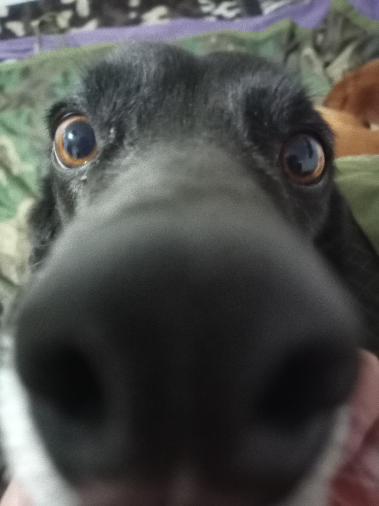

Project 1
Espacio para describir el proyecto.
Quinto semestre de Ingeniería de Sistemas
Espacio para describir el proyecto.
Espacio para describir el proyecto.
Espacio para describir el proyecto.
Estudiante activo en el programa de Ingeniería de Sistemas en Universidad Cesmag, Colombia.
Formación en tecnologías avanzadas de programación y manejo de bases de datos relacionales y no relacionales.
Implementación de proyectos individuales para mejorar habilidades técnicas y resolver problemas reales.